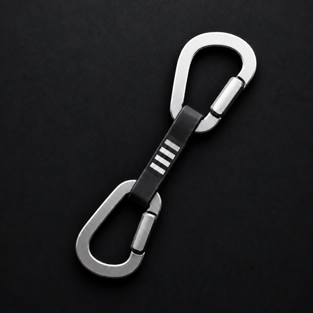

Foreground Applicationへ、公式Shortcutを配送する Delivers each app's own official shortcut to the foreground
押すキーはひとつ。
届くのは
各アプリの正規キー。
One key you press.
Each app's own shortcut arrives.
ミュートのショートカットはTeamsとZoomとMeetで違います。Rinvioはその差を吸収し、共通のTriggerを、前面のアプリが理解できるキーへ変換して送ります。 Mute is a different chord in Teams, Zoom, and Meet. Rinvio absorbs the difference: one trigger, converted into the key the foreground app already understands.

キーボードで ⌥M を押してみてください Press ⌥M on your keyboard
変換表The conversion table
左のTriggerを押すと、前面のアプリの列にある既定Shortcutが送られます。「—」はそのアプリに対応する操作がないことを示し、その場合Rinvioはキーを消費せずアプリへそのまま渡します。 Press the trigger on the left; the shortcut in the foreground app's column is what gets sent. A dash means that app has no matching command — Rinvio passes the key straight through instead of consuming it.
Actionを選び、Triggerを決めるPick an action, decide its trigger
左のSidebarはActionのカテゴリ、中央は各Actionと配送先の一覧、右のInspectorでTriggerとApplication Mappingを編集します。 The sidebar holds the action categories, the middle column lists every action with its targets, and the inspector on the right is where you edit the trigger and each app's mapping.
数はBuilt-in Catalogの実数です。JetBrains系IDEはmacOS既定キーマップを共有し、Application設定では個別に表示・Overrideできます。 Counts come from the built-in catalog. The JetBrains IDEs share one macOS keymap and are still listed and overridable individually.
忘れても、押さえたままでいいForgot one? Just keep holding
修飾キーを約0.6秒押したままにすると、前面のアプリで今使えるActionを画面中央に表示します。押さえたまま組み合わせを変えれば内容は即座に切り替わり、キーを離すと消えます。キー入力自体は消費しないため、⌥Tabのような元の操作はそのまま動きます。 Hold a modifier for about 0.6 seconds and the actions available in the foreground app appear in the center of the screen. Change the combination while holding and the list updates instantly; release to dismiss. The keys aren't consumed, so ⌥Tab and friends still behave normally.
各行はRinvio Triggerと、実際にアプリへ届くShortcutを分けて表示します。 Each row separates the Rinvio trigger from the shortcut the app actually receives.
既定値は出発点The defaults are a starting point
Triggerを変えるChange a trigger
Actionを呼び出すグローバルキーを、Fキーや未使用の⌘⌥／⌃⌥の組み合わせへ差し替えられます。macOSや他アプリの既存ショートカットと重なる場合は、Action Inspectorが警告を出します。Swap the global key that invokes an action for an F-key or an unused ⌘⌥ / ⌃⌥ combination. If it collides with a macOS or app shortcut you already use, the action inspector says so before you commit.
配送先を変えるChange what gets sent
アプリ側で既定を変えている場合は、そのApplicationのMappingだけをOverrideします。Restore DefaultでいつでもBuilt-in Catalogの値に戻せます。If you've customized a shortcut inside an app, override just that app's mapping. Restore Default returns it to the built-in catalog at any time.
アプリ単位で外すExclude an app
Applicationごとに対象のON/OFFを切り替えられます。OFFのアプリではTriggerを消費せず、Shortcutも配送せず、Guideも表示しません。Overrideは保持されるので、戻せばそのまま使えます。Turn any app on or off individually. While it's off, Rinvio consumes no triggers, delivers no shortcuts, and shows no guide there — your overrides are kept for when you turn it back on.
アプリの流儀に寄せるMatch an app's conventions
各設定画面の「〜に寄せる」から、そのアプリで対応済みのShortcutをTriggerへ一括反映できます。曖昧になるActionは現在のTriggerのまま残します。Adopt one app's existing shortcuts as your triggers in a single step. Actions that would become ambiguous keep the trigger they have.
2つの権限、決まった用途Two permissions, two jobs
Input Monitoringは登録済みTriggerの検出だけに使い、打鍵を保存しません。Accessibilityは対応Applicationへ公式Shortcutを配送するために使います。ChromeがForegroundのときは、Web Applicationの判定、Shortcut Guideの表示、最後に使ったApplicationの設定を開くためにForeground TabのURLを読み、schemeとhostだけを端末内で判定します。完全なURLは保存・送信しません。 Input Monitoring detects your registered triggers and stores no keystrokes. Accessibility delivers the official shortcut to the app in front. When Chrome is in the foreground, Rinvio may read the foreground tab's URL to identify supported web apps, show the Shortcut Guide, or open settings for the last-used app. Only the scheme and host are evaluated locally; the full URL is not stored or transmitted.
- noキー入力の記録key logging
- no完全なURLの保存full URL storage
- noテレメトリtelemetry
- noポーリングpolling
- noUIオートメーションUI automation
- noバックグラウンドのルーティングbackground routing
Direct download
無料で始めるStart for free
Rinvioは現在、アカウント登録やLicense Keyなしで無料配布しています。Developer IDで署名し、Appleのnotary serviceで公証したUniversal版です。 Rinvio is currently free, with no account or license key required. The universal build is signed with Developer ID and notarized by Apple.
DMGをダウンロードDownload the DMG- 対応OSRequiresmacOS 15+
- アーキテクチャArchitectureApple silicon + Intel
- 配布形式FormatSigned DMG
- 価格Price無料Free
ダウンロードしたDMGを開き、RinvioをApplicationsへドラッグする。Open the downloaded DMG and drag Rinvio into Applications.
ApplicationsからRinvioを起動する。Appleによる公証済みなので、通常の初回確認後に開けます。Launch Rinvio from Applications. It is notarized by Apple and opens after the standard first-launch confirmation.
下の「最初の5分」に沿ってInput MonitoringとAccessibilityを許可する。Follow “The first five minutes” below to allow Input Monitoring and Accessibility.
最初の5分The first five minutes
権限は順番に効いてきます。配送前に挙動を確かめたい場合は、Dry Runで一度も送らずに試せます。 The permissions build on each other. If you'd rather see the behavior before anything is sent, Dry Run runs the whole path and delivers nothing.
起動時のRinvio Windowで、ActionとApplicationのMappingを確認する。Review the actions and each app's mapping in the window that opens on launch.
閉じたあとはMenu BarのOpen Rinvio…から再表示できる。Reopen it later from Open Rinvio… in the menu bar.
InformationのInput Monitoringから許可を要求し、System Settings → Privacy & Security → Input MonitoringでRinvioを許可する。Request Input Monitoring from Information, then allow Rinvio in System Settings → Privacy & Security → Input Monitoring.
SettingsでDeveloper ModeをON、Information → Developer ToolsでDry Runを有効にする。Turn on Developer Mode in Settings, then enable Dry Run under Information → Developer Tools.
対象ApplicationをForegroundにしてTriggerを押す。Dry Runはshortcutを送信しない。Bring a supported app to the front and press a trigger. Dry Run sends no shortcut.
続いてShortcut Deliveryから許可を要求し、Privacy & Security → AccessibilityでRinvioを許可する。Then request Shortcut Delivery and allow Rinvio under Privacy & Security → Accessibility.
Dry Runを無効にして、対象ApplicationまたはWeb Application TabをForegroundにしてTriggerを押す。Turn Dry Run off, bring a supported app or web app tab to the front, and press a trigger.
Input Monitoringが未許可の場合、RinvioはTriggerを登録も消費もしない。Without Input Monitoring, Rinvio neither registers nor consumes triggers.
ソースからビルドするBuild it from source
verify.shはformat lint、unit test、開発用app bundle生成、Info.plist、code signatureをまとめて検証します。verify.sh runs the format lint, the unit tests, the dev app bundle build, and the Info.plist and code signature checks in one pass.
Scripts/verify.sh open '.build/app/Rinvio.app'